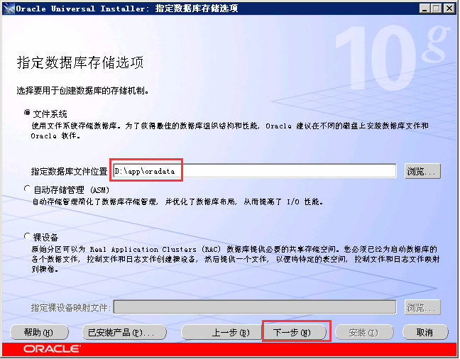
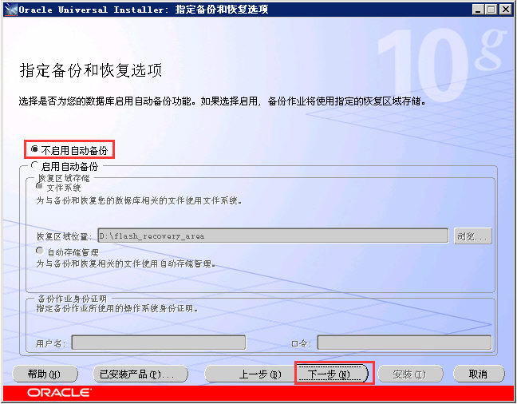

Oracle 10g安装
获得安装介质
1，从Oracle官方网站（http://www.oracle.com）下载Oracle 10g安装盘。需要注册一个用户否则不能下载。下载后为两个 ZIP 文件:10201_database_win32.zip,10201_client_win32.zip。
2，目前官网已不提供该下载。http://yun.baidu.com/share/link?shareid=2395485137&uk=1580606997&fid=1794882899
- 安装Oracle数据库
- 解压10201_database_win32，进行解压后的目录双击“SETUP”启动Oracle 数据库安装程序
- 选择安装方法，我们选择高级安装
- 选择安装类型。选择企业版
- 指定安装目录信息，进行下一步，安装程序对系统的安装条件进行检查。
Oracle介质存放路径
172.18.100.172 D:\soft\Oracle 10g
172.18.100.147 D:\soft\Oracle 10g
Oracle安装路径
C:\Program Files\Oracle
Oracle实例和数据路径
172.18.100.172 D:\app
172.18.100.147 D:\oracle\product\10.2.0
- 选择配置选项，此时我们使用默认的选择“创建数据库”。
- 选择数据库配置
- 指定数据库配置选项
- 选择数据库管理选项，按默认即可。
- 指定数据库存储选项

- 指定备份和恢复选项，目前选择不备份。

- 指定数据库方案的口令，为方便这里采用同一密码模式，密码全为：KjbgzvGGnOBcQiN
- 显示安装概要，点击安装后开始安装

- 可能发生的错误：
(1)，Enterprise Manager配置失败 数据库实例不可用(在win 2003 64bit上安装时出现)
2014-8-17 18:45:02 oracle.sysman.emcp.EMDBPreConfig checkRepositoryConfiguration
严重: 数据库实例不可用。
2014-8-17 18:45:02 oracle.sysman.emcp.EMConfig perform
严重: 数据库实例不可用。
有关详细资料, 请参阅 D:\app\cfgtoollogs\dbca\CCYL\emConfig.log 中的日志文件。
2014-8-17 18:45:02 oracle.sysman.emcp.EMConfig perform
配置: Stack Trace:
oracle.sysman.emcp.exception.EMConfigException: 数据库实例不可用。
(2)，Enterprise Manager配置失败 用户名/口令无效。(在win 2003 32bit上安装时出现)
2013-7-6 4:29:57 oracle.sysman.emcp.EMConfig perform
严重: 用户名/口令无效。
有关详细资料, 请参阅 D:\app\cfgtoollogs\dbca\CCYL\emConfig.log 中的日志文件。
- 完成安装
数据库配置文件已经安装到 D:,同时其他选定的安装组件也已经安装到 D:\app。
iSQL*Plus URL 为:
http://hospial-01:5560/isqlplus
iSQL*Plus DBA URL 为:
http://hospial-01:5560/isqlplus/dba
- Enterprise Manager重新配置
- 重新配置，以解决安装时出现的错误：
- 配置完成后，打开浏览器输入：http://hospial-01:1158/em 进入管理登陆界面。
- 删除与重建EM的相关脚本命令行：
C:\Documents and Settings\Administrator>set oracle_sid=CCYL
C:\Documents and Settings\Administrator>emctl start dbconsole
OC4J Configuration issue. D:\app/oc4j/j2ee/OC4J_DBConsole_hospial-01_CCYL not fo
und.
C:\Documents and Settings\Administrator>emca -repos drop
EMCA 开始于 2013-7-7 2:14:14
EM Configuration Assistant 10.2.0.1.0 正式版
版权所有 (c) 2003, 2005, Oracle。保留所有权利。
输入以下信息:
数据库 SID: CCYL
监听程序端口号: 1521
SYS 用户的口令: twandpp#811124
SYS 用户的口令: ttwandpp#811124
SYSMAN 用户的口令: twandpp#811124
SYSMAN 用户的口令:
是否继续? [yes(Y)/no(N)]: Y
2013-7-7 2:16:17 oracle.sysman.emcp.EMConfig perform
信息: 正在将此操作记录到 D:\app\cfgtoollogs\emca\CCYL\emca_2013-07-07_02-14-14-
上午.log。
2013-7-7 2:16:20 oracle.sysman.emcp.EMReposConfig dropRepository
信息: 正在删除 EM 资料档案库 (此操作可能需要一段时间)...
2013-7-7 2:17:54 oracle.sysman.emcp.EMReposConfig invoke
信息: 已成功删除资料档案库
已成功完成 Enterprise Manager 的配置
EMCA 结束于 2013-7-7 2:17:54
C:\Documents and Settings\Administrator>emca -repos create
EMCA 开始于 2013-7-7 2:32:59
EM Configuration Assistant 10.2.0.1.0 正式版
版权所有 (c) 2003, 2005, Oracle。保留所有权利。
输入以下信息:
数据库 SID: CCYL
监听程序端口号: 1521
SYS 用户的口令: twandpp#811124
SYSMAN 用户的口令: twandpp#811124
SYSMAN 用户的口令:
是否继续? [yes(Y)/no(N)]: Y
2013-7-7 2:33:59 oracle.sysman.emcp.EMConfig perform
信息: 正在将此操作记录到 D:\app\cfgtoollogs\emca\CCYL\emca_2013-07-07_02-32-59-
上午.log。
2013-7-7 2:34:02 oracle.sysman.emcp.EMReposConfig createRepository
信息: 正在创建 EM 资料档案库 (此操作可能需要一段时间)...
2013-7-7 2:37:30 oracle.sysman.emcp.EMReposConfig invoke
信息: 已成功创建资料档案库
已成功完成 Enterprise Manager 的配置
EMCA 结束于 2013-7-7 2:37:30
C:\Documents and Settings\Administrator>
- 安装Oracle数据库客户端
- 打开Oracle 客户端安装盘“10201_client_win32” 双击“SETUP”启动Oracle 数据库客户端安装程序。
- 选择安装类型，选择管理员安装。
- 指定ORACLE 客户端的安装路径，其它选项保持默认，等待安装完成。
- Oracle数据库迁移步骤
- 实施数据迁移前，需要做好以下几个方面工作：进行完全数据备份、确定数据迁移方案、安装和配置软硬件等。
- 按照确定的数据迁移方案，正式实施数据迁移。
注：IMPORT命令执行的方法和EXPORT方案有关。
如果EXPORT所实施的是完全型方案(FULL)则在IMPORT时所有的数据对象，包括表空间，数据文件，用户都会在导入时创建，但考虑到数据库中的物理布局，预先创建表空间和用户；
如果EXPORT使用的是INCREMENTAL/CUMULATIVE方式，则需要预先设置好表空间、用户
- 按照数据迁移测试方案，测试数据迁移效果，并对数据迁移后的数据库参数和性能进行调整，使之满足数据迁移后实际应用系统的需要。
- 将实际应用系统的应用软件移植到数据迁移后的数据库系统上，并使之正常运行。
- 正式实施数据迁移成功并且数据库参数和性能达到要求后，就可以正式运行应用系统，并投入实际使用。